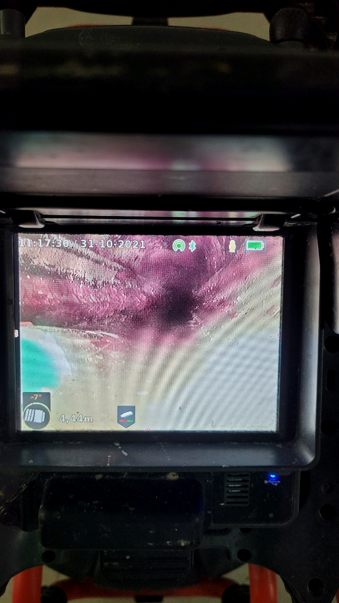
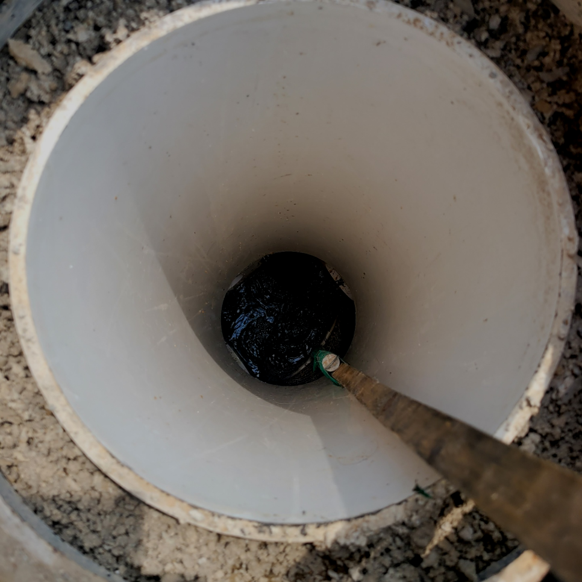
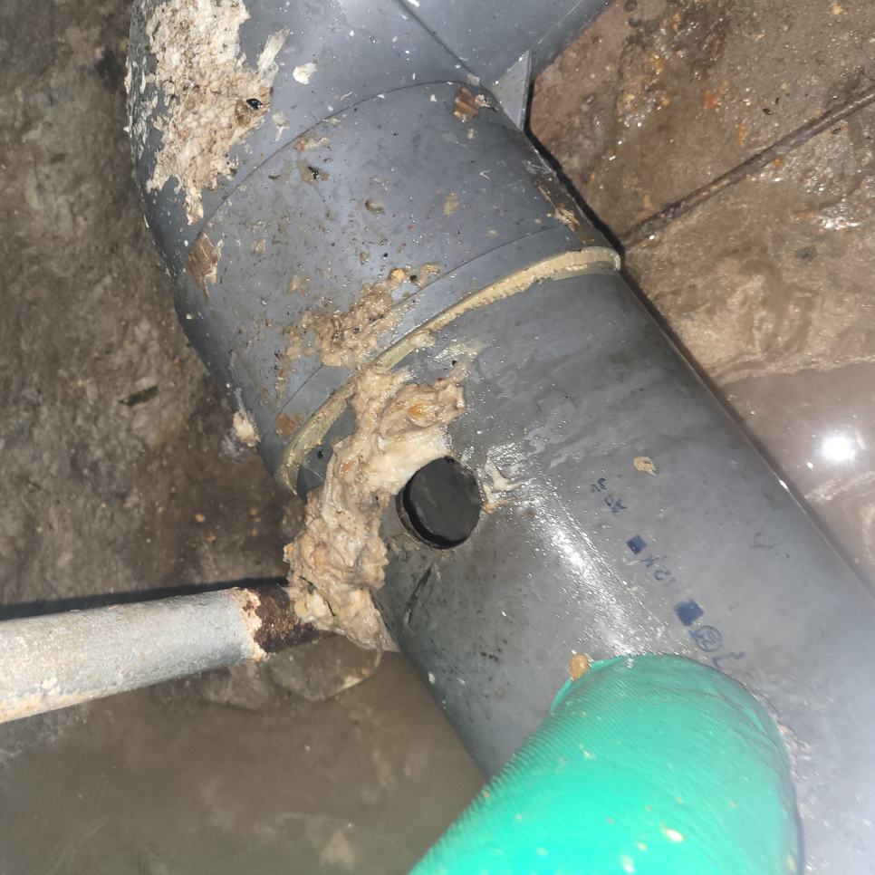
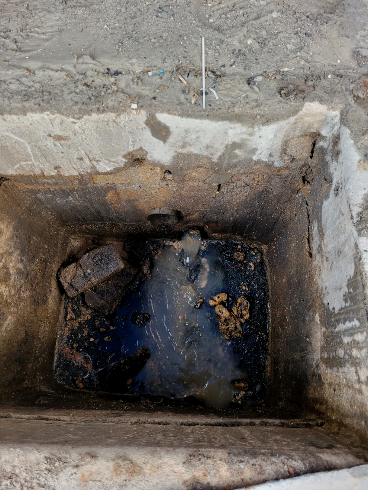
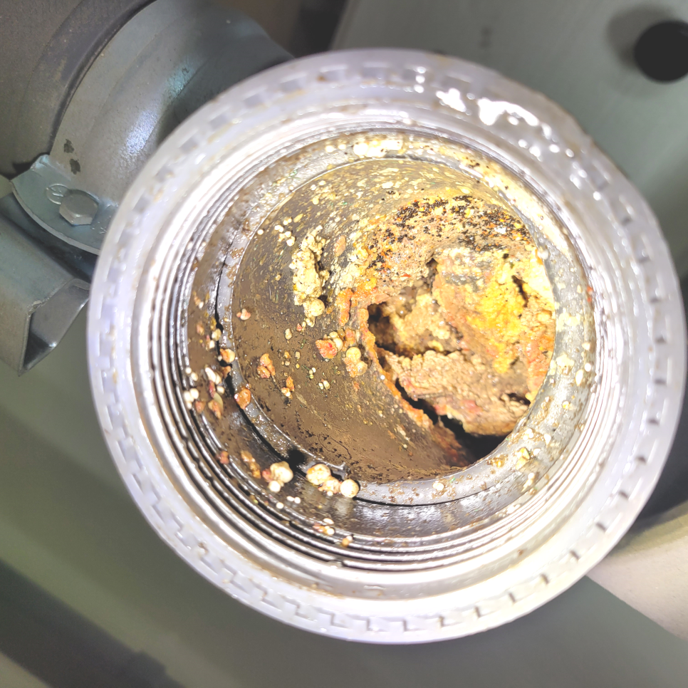

🏠 시흥 거모동 배수구막힘 군자동 하수배관 뚫는곳 설비업체
시흥 싱크대막힘 전문 시공 후기

📋 작업 개요
- 위치: 시흥
- 서비스 유형: 싱크대막힘, 변기막힘, 하수구막힘, 배관막힘, 누수수리, 역류해결, 뚫는업체, 배관청소
- 작업 일시: 2024. 3. 13. 18:13
- 업체명: 하수구수사대 (010-5615-2118)
🔍 문제 상황
반갑습니다!
설비전문업체 "하수구수사대"를 찾아주셔서 고맙습니다.
누구나 한번쯤은 배수관 막혀 난감하셨던 경험이 있으실 겁니다. 배수관가 막혔을때 처음에는 직접 셀프로 뚫수도 있는 방법에 대해 알아보고 시도하는 분들이 많으십니다.

🔎 원인 분석
💡 전문가 진단: 시흥 거모동 배수구막힘 군자동 하수배관 뚫는곳 설비업체
보이지 않는 배수가 막힌 경우에는 고객님께서는 더욱이 손을 쓸수 없는 상황에 당혹감을 느끼실 수밖에 없게 될 것인데오ㅛ. 이럴때는 혼자서 해결을 하려고 하지 마시고 반드시 배수전문업체를 통해서 해결을 하실 것을 추천드립니다.
시흥 거모동 배수구막힘 군자동 하수배관 뚫는곳 설비업체
하수도작업 도중에 혹시 무슨 일이 생길 수도 있으니 크란즐과 로덴베르거라는 전동 스프링기도 준비해서 대비를 하기로 했습니다. 앞쪽 입구에서만 접근이 가능하며 작업에도 한계가 잇는 상황이기에 강력한 기계를 사용하면서도 속도를 조절해야 했습니다.
현장에 도착하면 다양한 퇴수구배관 문제와 더불어 다양한 증상, 원인, 난이도 등 차이를 보이게 됩니다. 때문에 일정을 짜는 것이 무엇보다 중요할 수밖에 없습니다. 일정이 꼬이면 곧장 뚫지 못해 사용에 어려움을 겪게 됩니다.

🔧 작업 과정
배수배관 단면이 축소되면서 하수 배출 능력이 현저히 떨어진 상태라는 걸 학인할 수 있었죠. 이런 상태가 지속되는 경우 배수배관 변형은 물론 누수, 역류 등의 문제가 발생하기 때문에 전문가에게 디테일한 관리를 맡기는 게 무엇보다 중요합니다.
하수관배관이 급하게 꺾이는 구조는 특히 모서리 쪽에 유속이 느려지는 부분이 생기면서 침전이 생기게 됩니다. 시간이 지나면 침전물 위로 기름때가 붙거나 이물질이 걸리면서 점차 물의 흐름을 방해하고 불편함을 느끼게 되는 것입니다. 특히 관이 좁은 경우 기름때로 인해 구멍이 상당히 좁아진 것도 볼 수 있습니다.
하수막힘 처리하지못하는것에관해선 견적가를요구하는일은 있을수가없어요.내방을하기만해도 금액을요구할때 답답해하고계시는 고객님들만기분이 나빠지시는데요.
중요한 것은 신뢰할 수 있는 하수업체를 선택하는 것이며, 비용을 투자하여 문제를 해결하는 것은 더 큰 문제를 방지하는 데 도움이 된다는 것입니다. 또한, 실수나 잘못된 조치로 인해 문제가 악화되지 않도록 조심해야 합니다. 하수배관에 머리카락 거름망을 사용하여 머리카락이 하수구에 들어가지 않도록 주의를 기울이는 것도 중요한 방법 중 하나입니다.
이를 오랜 시간 방치하다가는 잠깐이면 해결될 하수문제들이 눈덩이처럼 커질 수 있기 때문입니다. 저희 하수업체는 서울 및 경기 전 지역 빠른 출동으로 문제를 해결해 드리고 있으며, 위와 같이 고객님께서 원하시는 시간에 최대한 맞춰 출동을 도와드리고 있습니다.
여러분들이 생각하시는 것보다 깊게까지 자리 잡은 하수도이기에 육안으로만 탐지하기에는 한계치가 존재하기 마련입니다.원인을 파악하기 위해 내시경을 투입하고 문제가 되는 곳을 진단해야만 하는 사유가 되기도 합니다. 기름 슬러지는 날이면 날마다 쌓이고 쌓이기 때문에 뚫어내기가 난감해집니다.


✅ 작업 완료
혹시, 여러분 계신곳에도 비슷한 배수관막힘이나 역류 문제가 있다면 언제든 부담 없이 저희를 찾아 연락주세요. 항상 최선을 다해 출동하고 해결해 드리겠습니다.
#하수구막힘 #하수구뚫음 #하수구역류 #씽크대막힘 #싱크대역류 #오수관막힘 #하수구청소 #욕실하수구막힘 #변기막힘 #하수구뚫는비용 #싱크대수리 #화장실막힘



⚠️ 베란다 누수 및 방수 관리 방법
- ✅ 비가 많이 올 때 창틀 주변이나 아래층 천장에 얼룩이 생기는지 정기적으로 확인해 보세요.
- ✅ 우수관 주변 실리콘 마감이 들뜨거나 깨진 틈새가 있는지 손상 여부를 수시로 체크하세요.
- ✅ 베란다 바닥 타일의 줄눈(메지)이 소실되면 그 틈으로 물이 침투하여 누수가 유발됩니다.
- ✅ 누수 의심 증상 발견 시 방치하면 아래층 손실이 커지므로 즉시 전문가의 진단을 받으십시오.
💡 핵심 정리
- 확실한 장비 작업(내시경 점검 및 샤프트 스케일링)으로 원인을 뿌리 뽑습니다.
- 작업 후 1년 이내에 동일한 부위 재발 시 100% 무상 A/S 서비스를 보장합니다.
- 서울 · 경기 · 인천 전 지역에 24시간 언제든 긴급 출동할 수 있도록 항시 대기 중입니다.
❓ 자주 묻는 질문 (FAQ)
🚨 시흥 싱크대막힘 문제로 고민이신가요?
정확한 원인 진단과 확실한 시공으로 재발 없는 해결을 약속드립니다.
24시간 긴급 출동 | 서울 · 경기 · 인천 전지역 | 1년 내 재발 시 무상 A/S